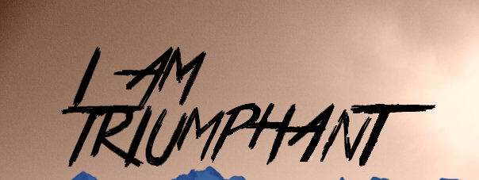
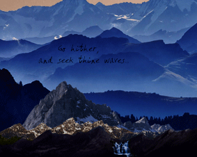
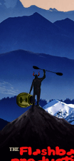

![During the Great Time Collapse, one, Joshua Neal Dalton was out and about capturing film for his next awesome installment of a Flashback Productions film (entitled 'Baby's Got Boof') and suddenly found himself miniaturized, digitized, and trapped inside of his very own video camera. After a thousand years trapped inside the camera's casing, he is, well, a tad bit off and thinks that he is King of this new World. Watch his videos and help free him from his plastic prison. So I don't have to deal with his ugly face anymore. A silhouette behind bars.](images/RightSide.gif)